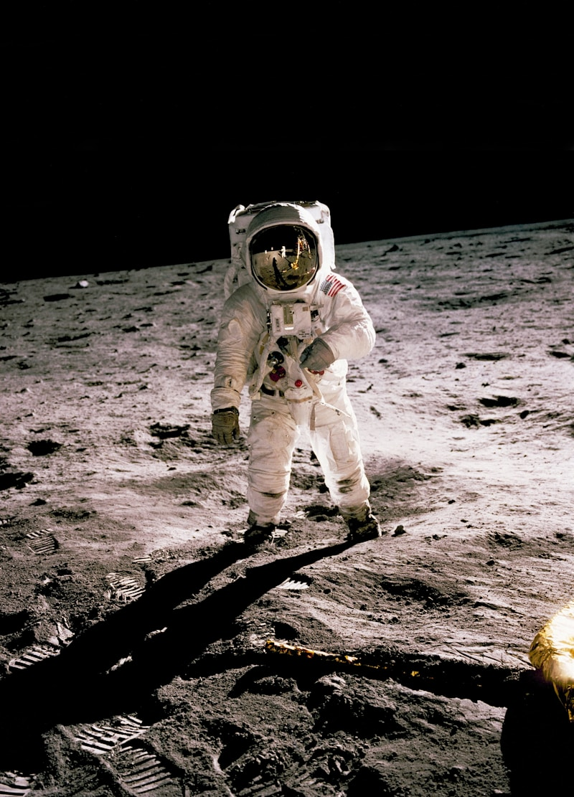
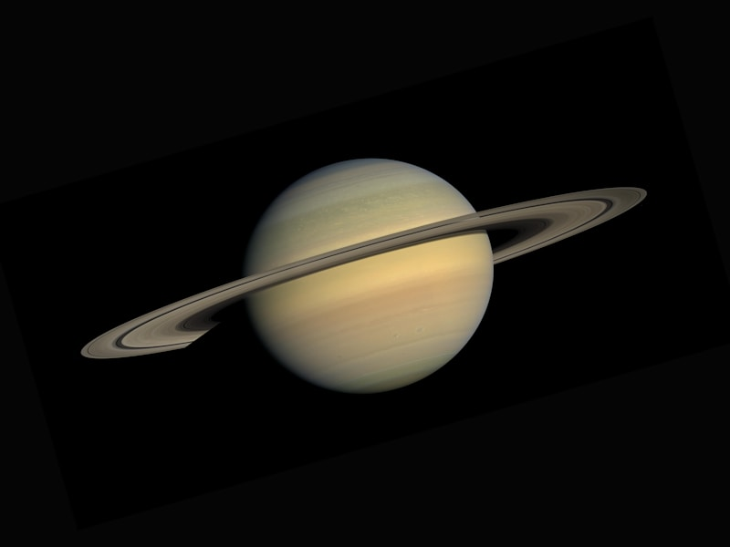
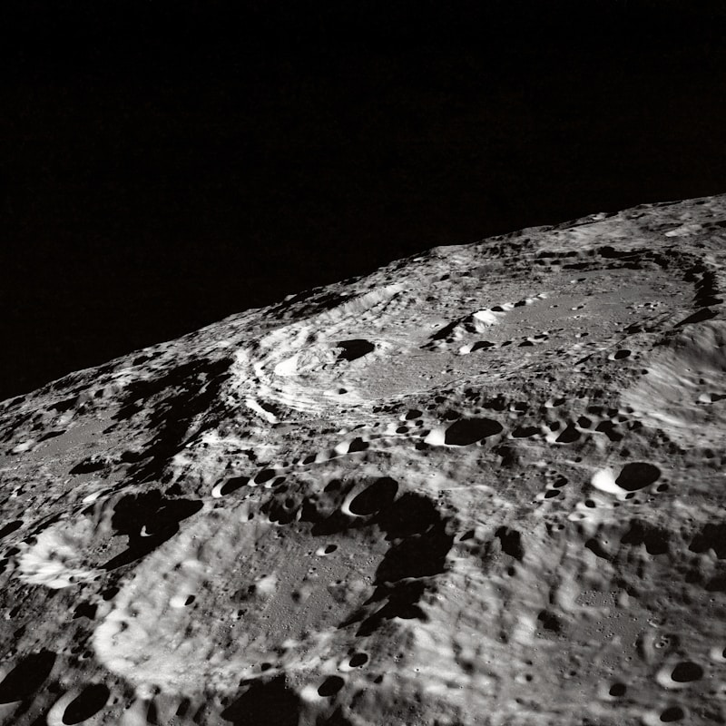
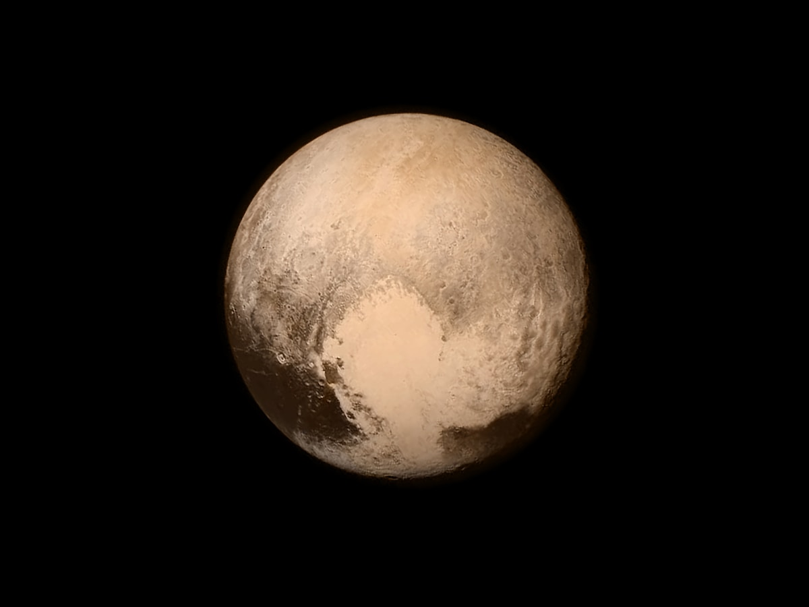
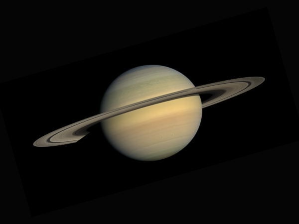

太阳是太阳系的中心天体，一颗黄矮星。直径约139万公里，表面温度约5500°C。太阳的能量来自核心的核聚变反应，每秒将约420万吨物质转化为能量。太阳的光和热为地球生命提供了能量源泉。

太阳
Sun
直径1,392,700km · 表面温度5,505°C
G2V型黄矮星
太阳耀斑
Solar Flare
太阳表面剧烈的能量爆发，可影响地球通信
高能粒子流
日冕
Corona
太阳大气的最外层，温度可达数百万度
日全食可见太阳系有八大行星，从内到外依次为：水星、金星、地球、火星、木星、土星、天王星、海王星。它们各具特色，从灼热到冰冷，从岩石到气态巨行星。

水星
Mercury
距太阳最近，表面温差极大，白天430°C，夜晚-180°C
直径4,879km
金星
Venus
地球的姊妹星，浓厚的二氧化碳大气导致严重温室效应
直径12,104km
🌍 地球
Earth
已知唯一存在生命的行星，70%被海洋覆盖
直径12,742km
火星
Mars
红色星球，拥有太阳系最高的山峰—奥林匹斯山
直径6,779km
木星
Jupiter
太阳系最大的行星，大红斑风暴持续数百年
直径139,820km
土星
Saturn
壮观的环系统，密度比水小，是太阳系密度最小的行星
直径116,460km小行星带位于火星和木星之间，由数百万颗大小不等的小天体组成。最大的小行星是谷神星（直径约940公里），已被归类为矮行星。小行星带是太阳系形成时残留的"建筑材料"。

谷神星
Ceres
小行星带中最大的天体，已被列为矮行星
直径940km
灶神星
Vesta
小行星带中质量第二大的天体
直径525km
小行星采样
Asteroid Sample
人类的探测器已成功从小行星上采集样本返回地球
探测任务🚀 星际探索影片
跟随镜头，领略宇宙的震撼之美
* 视频来源：Pexels 免费太空素材